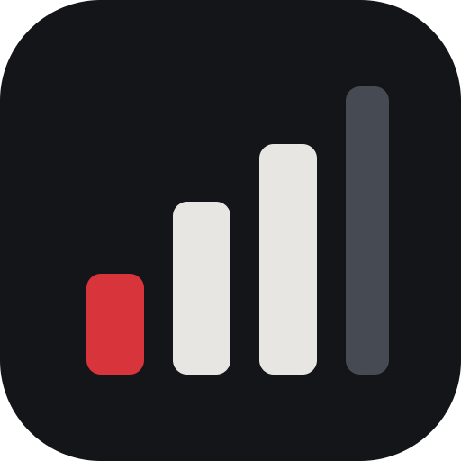

NoteshAIre
Practice goals that fill up from what you actually play.
Digital piano, acoustic piano, guitar, voice, sax and more.
Open this page on your Mac or Windows computer to download.
Download for MacFreeOn Windows? Download for Windows
After it downloads
- Open the downloaded file (NoteshAIre-Mac).
- Drag NoteshAIre into Applications.
- Open NoteshAIre from Applications. Plug in your digital piano, or press Listen for any other instrument or your voice.
After it downloads
- Open the downloaded file (NoteshAIre-Windows).
- If Windows says "Windows protected your PC", click More info, then Run anyway.
- NoteshAIre opens by itself. Plug in your digital piano, or press Listen for any other instrument or your voice.
A digital piano connects by USB; everything else is heard through your computer's microphone, only while you press Listen. Free, and nothing leaves your computer.